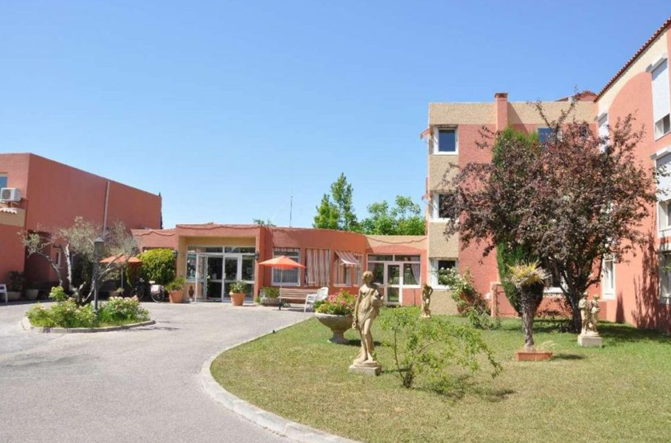

Programmeur web à l'Esterel
Histoire de l'Esterel :
L’EPHAD Esterel est une maison de retraite crée en 1992 à Salon de Provence par Louis CHORRO,
le but de cette entreprise est d’accueillir et de prendre soin de personne atteint d’un certain âge qui ne peuvent plus se débrouiller seul jusqu’à la fin de leur vie.
Mon rôle au sein de l'entreprise :
J’ai été pris en CDD de 6 semaines à L’Esterel pour créer un site web pour l’entreprise, leur ancien site était assez vieux, mal désigné et pas à jour sur les derniers changement de l’entreprise, nous étions une équipe de 4 développeurs et nous avions 6 semaines pour réalisé une maquette et crée un site qui répondra au attente de la direction de l’entreprise.
On nous a demandé de créer un site en 2 parties,
une partie vitrine qui sera visible à tout publique affin de pouvoir se renseigner sur l’entreprise, les différents prix pour les chambres, une représentation détaillé du personnel médical et hôtelier et en renseignant son adresse mail envoyer un message à l’administration pour pouvoir poser divers question, publier des avis et pouvoir accéder au compte instagrame et Facebook de l’Esterel,
une partie administrative pour que les employé puissent choisir quelle photo et vidéo ils veulent mettre en avant sur la partie vitrine, et encore dans la partie administrative les tuteur légaux pourrons télécharger les photos de leurs parent ou grand-parent.
Les bon points :
J'ai pu découvrir à quoi ressemblait le monde du travail, travailler en équipe et avoir des horaires comme un vrai salarié, j'ai aussi appris beaucoup sur l'organisation et j'ai dû trouver des solutions dans des situations compliquées. Il y avait aussi une très bonne ambiance dans l'équipe.

Les mauvais points :
Le plus compliqué a été de s'adapter physiquement et mentalement à ce nouveau rythme de vie, devoir rester debout toute la journée, les clients désagréables et malpolis.
Conclusion :
Cela a été une très bonne expérience professionnelle, je me suis très vite senti à l'aise et l'équipe a été très sympathique et patiente avec moi,
je remercie toute l'équipe de la Fnac de Salon-de-Provence pour tout ce qu'ils ont fait pour moi.